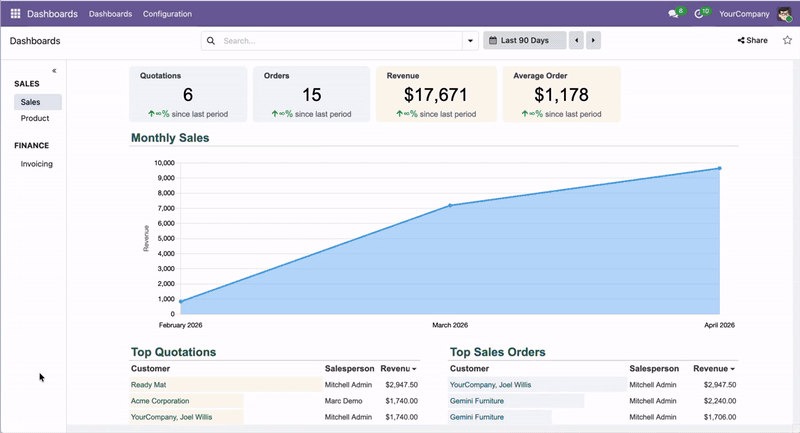
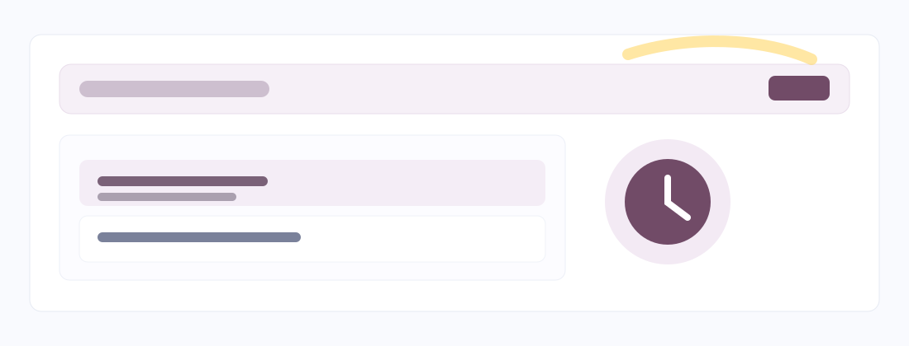
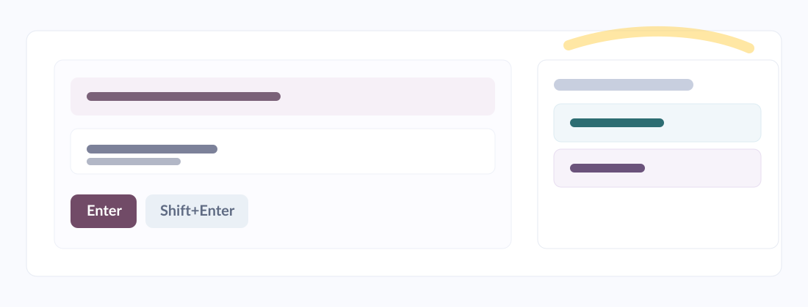
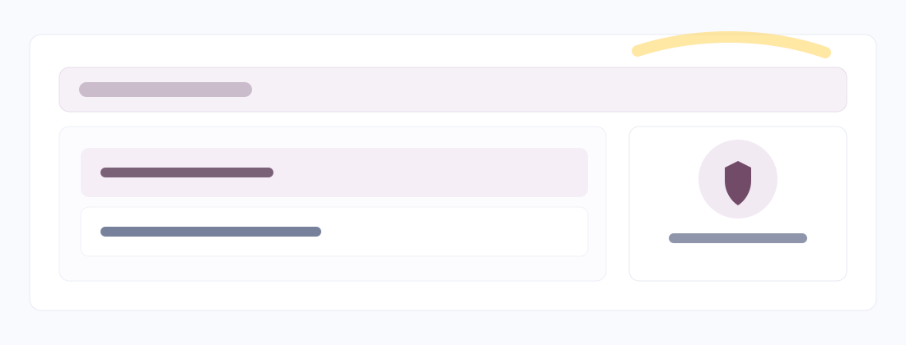
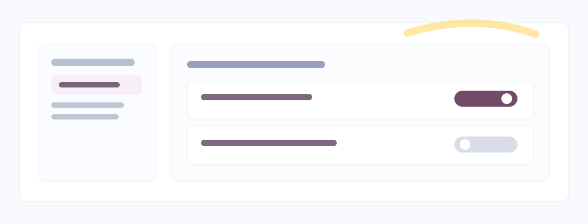
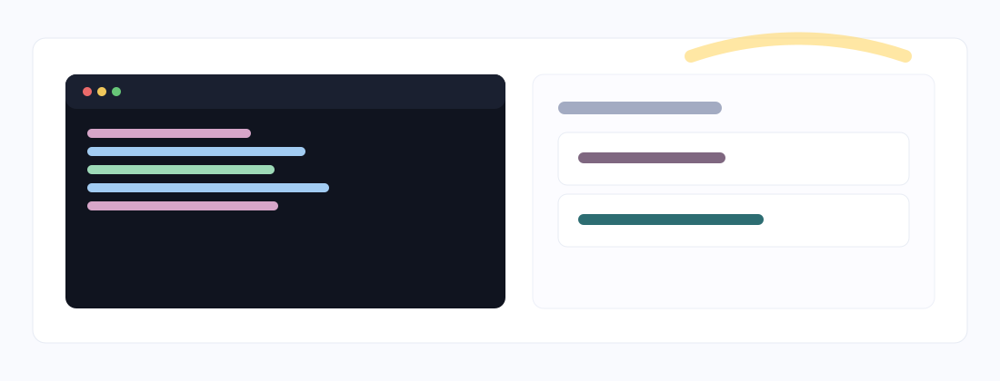
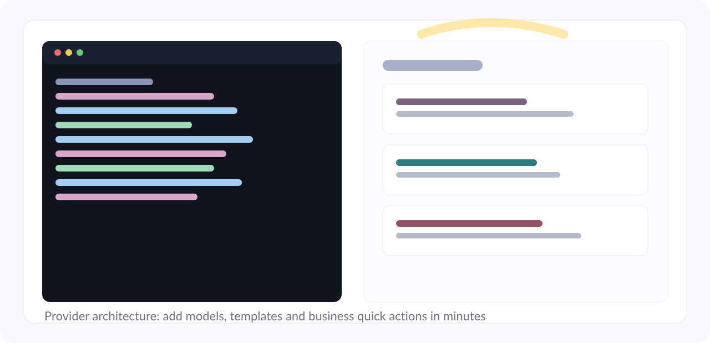

A floating command palette for power users and business teams. Search records from anywhere, open faster, and execute actions instantly.

Search any record from anywhere in Odoo with one shortcut.

Press Enter to open, Shift+Enter for wizard mode, then run quick actions.

Native look and feel, smooth UX, and full respect of Odoo security rules.

Enable or disable models and control the number of results per provider.

Customize templates, add providers, and adapt Spotlight to your business workflows.

Extend Spotlight quickly with your own providers and quick actions.

Don't miss our upcoming features and improvements.